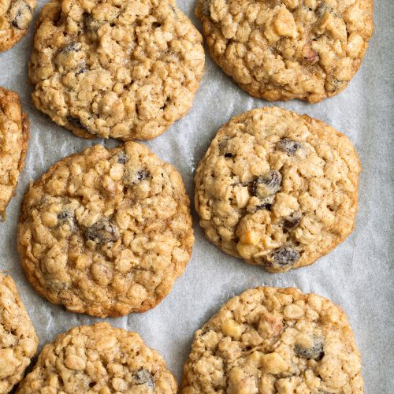

Grandma's Oatmeal Cookies

Description
Here's a classic, chewy Oatmeal Cookie! This was Grandma's favorite oatmeal cookie recipe, made with oats, brown sugar, white sugar, flour, and shortening. Walnuts and raisins are optional.
Ingredients
1 cup shortening
1 cup brown sugar
1 cup white sugar
2 large eggs, well beaten
1 tablespoon vanilla extract
1 1/2 cups all-purpose flour
1 teaspoon kosher salt
1 teaspoon baking soda
1 tablespoon cinnamon
1 tablespoon water
1 cup raisins, optional
3/4 cup chopped walnuts (use 1/2 cup if using raisins)
3 cups old-fashioned rolled oats (we use Quaker Quick or Old Fashioned. Do NOT use instant.)
Steps
Preheat the oven:
Preheat the oven to 350°F.Make the cookie dough:
Beat together the shortening, brown sugar, and white sugar. Add the eggs and vanilla extract, and beat well.
Whisk together the flour, salt, baking soda, and cinnamon. Add to sugar and egg mixture and mix well. Add a tablespoon of water. Add raisins (if using) and nuts. Add oats last.Bake:
Spoon out by heaping tablespoonfuls on to greased cookie sheets. Bake at 350°F. Bake for 10 minutes. Remove to a wire rack.Cool completely:
Cookies will keep for several days in an airtight container on the counter.
Home